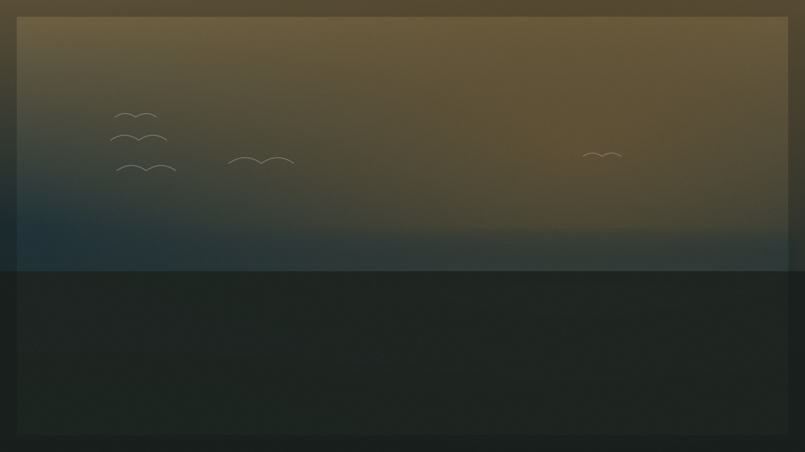
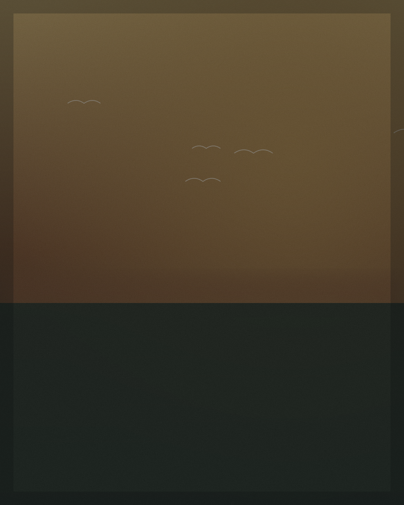

Obras em destaque

Galeria de arte · Belém do Pará
Uma galeria digital nascida em Belém do Pará para apresentar peças pintadas à mão com linguagem clássica, alma regional e curadoria voltada ao Brasil e ao mercado internacional.
Manifesto
A Casa de Origem reúne obras que carregam a atmosfera das águas, da vegetação, da luz e da memória do Norte do Brasil. Cada peça é apresentada como parte de um acervo visual que transforma paisagem, afeto e herança em presença decorativa.
Obras em destaque

Origem
Belém do Pará não entra aqui como cenário, mas como origem. A água, a vegetação, a luz, a fauna e a memória arquitetônica da cidade se transformam em linguagem visual e posicionamento. O resultado é uma galeria de obras com identidade brasileira e vocação internacional.
Coleções
 01
01Rios, reflexos e a serenidade das aves.
 02
02Memória, origem e laços familiares.
 03
03A vegetação tropical da cidade-floresta.
 04
04Névoa, mata e contemplação.
 05
05Peças de acervo, linguagem atemporal.
→Todas as obras disponíveis e sob consulta.
Experiência
Obras únicas ou de acervo limitado, pintadas à mão.
Curadoria que acompanha cada aquisição de perto.
Linguagem regional na origem, universal na leitura.
Envio cuidadoso para todo o Brasil.
Atendimento e suporte de envio sob consulta.
Obras pensadas para ambientes sofisticados.

Aquisição